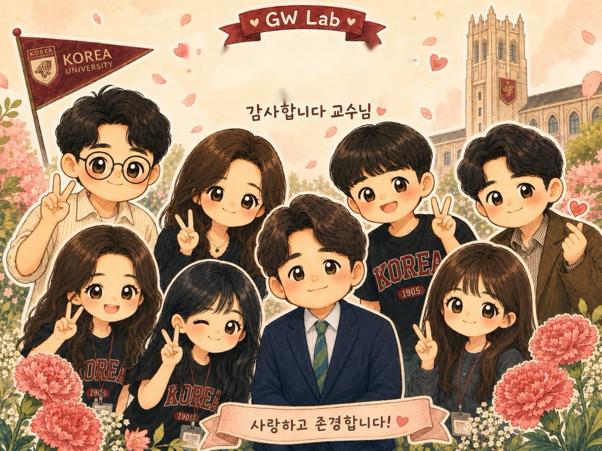

Story

Professor
Information Systems
Korea University Business School
Professor Gunwoong Lee is a faculty member at Korea University Business School, specializing in Information Systems. His research focuses on Artificial Intelligence, IT and Societal Outcomes, and Business Analytics, investigating how AI applications and digital technologies impact local economies, consumer behaviors, and business ecosystems.
His work has been published in leading journals including MIS Quarterly, Information Systems Research, Journal of the Association for Information Systems, Journal of Management Information Systems, and Expert Systems with Applications. Prof. Lee has consulted for companies including NAVER, Kakao Mobility, LG Electronics, Samsung Electronics, NAVER WebToon, Hospitals, Banks, Law Firms, Concsulting Frims and Goverment Agencies.
Prior to joining Korea University in 2020, Prof. Lee served as a faculty member at Sungkyunkwan University (2017–2020) and Nanyang Technological University in Singapore (2015–2017). He received his Ph.D. in Information Systems from Arizona State University in 2015.
Impact of AI applications on local economies, AI-based recommendations on consumer behaviors, role of generative AI in business, and AI ethics.
Impact of digital technologies on local economies, digital piracy, digital divide, data privacy regulations (GDPR), and network neutrality.
Big data analytics on mobile platforms, digital innovation, sharing economy, and data-driven business strategies.
Information Systems Research (ISR). https://doi.org/10.1287/isre.2025.1970
Journal of Management Information Systems (JMIS), 43(4).
MIS Quarterly, 50 (2): 557–588.
Information Systems Research (ISR), 36(2), 669–689.
Journal of the Association for Information Systems (JAIS), 19(3), 308–327.
Journal of Management Information Systems (JMIS), 31(2), 133–170.
Expert Systems with Applications, 184, 115480.
Decision Support Systems (DSS), 46(4), 755–762.
Information Systems Review, 28(2).
Information Systems Review, 28(1), 77–102.
Information Systems Review, 27(1), 1–33.
Information Systems Review, 24(3), 43–68.
Information Systems Review, 24(3), 1–21.
Journal of Korea Advertising Society, 33(1), 29–42.
Information Systems Review, 23(3), 77–96.
Korean Journal of Business Administration, 33(8), 1459–1473.
Information Systems Review, 21(2), 69–89.
Information Systems Research (ISR)
Journal of the Association for Information Systems (JAIS)
Decision Support Systems (DSS)
Information Processing and Management (IPM)
Production and Operations Management (POM)
MIS Quarterly (MISQ)
Information Systems Research (ISR)
International Journal of Electronic Commerce (IJEC)
European Journal of Information Systems (EJIS)
Target journal: Information Systems Research
Target journal: Management Science
Target journal: Production and Operations Management
Target journal: MIS Quarterly
Target journal: Information Systems Research
Target journal: Information Systems Research
Target journal: Manufacturing & Service Operations Management
Target journal: Journal of Management Information Systems
Target journal: Information Systems Research
Target journal: Journal of Management Information Systems
Target journal: Management Science
Target journal: Journal of Advertising
Target journal: Management Science
Target journal: Economics Letters
Target journal: MIS Quarterly (Research Methodology)
Target journal: Information Systems Research
International Conference on Information Systems (ICIS), Lisbon, Portugal, December 13–16, 2026.
International Conference on Information Systems (ICIS), Lisbon, Portugal, December 14–17, 2026.
The 36th Workshop on Information Technologies and Systems (WITS), Lisbon, Portugal, December 16–18, 2026.
Post-ICIS KrAIS Research Workshop, Lisbon, Portugal, December 16, 2026.
Post-ICIS KrAIS Research Workshop, Lisbon, Portugal, December 16, 2026.
Post-ICIS KrAIS Research Workshop, Lisbon, Portugal, December 16, 2026.
The Korea Society of Management Information Systems (KMIS), Seoul, Korea, November 11, 2026.
Conference on Information Systems and Technology (CIST), San Francisco, CA, November 1–4, 2026.
The 2026 INFORMS Annual Meeting, San Francisco, CA, November 1–4, 2026.
The 2026 INFORMS Annual Meeting, San Francisco, CA, November 1–4, 2026.
The Korea Society of Management Information Systems (KMIS), Seoul, Korea, May 29–31, 2026.
The Americas Conference on Information Systems (AMCIS), Reno, NV, August 21–23, 2026.
The Americas Conference on Information Systems (AMCIS), Reno, NV, August 21–23, 2026.
The Americas Conference on Information Systems (AMCIS), Reno, NV, August 21–23, 2026.
The Americas Conference on Information Systems (AMCIS), Reno, NV, August 21–23, 2026.
Pacific Asia Conference on Information Systems (PACIS), Indonesia, July 5–9 2026.
Pacific Asia Conference on Information Systems (PACIS), Indonesia, July 5–9 2026.
Pacific Asia Conference on Information Systems (PACIS), Indonesia, July 5–9 2026.
2025 KrAIS Summer Workshop, Seoul, Korea, June 30 - July 1, 2025.
Statistical Challenges in E-Commerce Research (SCECR), Tokyo, Japan, June 21–24, 2026.
Statistical Challenges in E-Commerce Research (SCECR), Tokyo, Japan, June 21–24, 2026.
International Conference on Information Systems (ICIS), Nashville, TN, December 14–17, 2025.
INFORMS Annual Meeting 2025, Atlanta, GA, October 26–29, 2025.
INFORMS Annual Meeting, Atlanta Georgia, October 26–29, 2025.
INFORMS Annual Meeting, Atlanta Georgia, October 26–29, 2025.
Pacific Asia Conference on Information Systems (PACIS), Kuala Lumpur Malaysia, July 5–9 2025.
2025 KrAIS Summer Workshop, Busan, Korea. June 30 - July 1, 2025.
The Korea Society of Management Information Systems (KMIS), Daejeon, Korea, May 29–31, 2025.
The Korea Society of Management Information Systems (KMIS), Daejeon, Korea, May 29–31, 2025.
The Korea Society of Management Information Systems (KMIS), Daejeon, Korea, May 29–31, 2025.
The Korea Society of Management Information Systems (KMIS), Daejeon, Korea, May 29–31, 2025.
The Korea Society of Management Information Systems (KMIS), Daejeon, Korea, May 29–31, 2025.
The Korea Society of Management Information Systems (KMIS), Daejeon, Korea, May 29–31, 2025.
Statistical Challenges in E-Commerce Research (SCECR), Paphos, Cyprus, June 22–24, 2025.
Post-ICIS KrAIS Research Workshop, Bangkok, Thailand, December 19, 2024.
Post-ICIS KrAIS Research Workshop, Bangkok, Thailand, December 19, 2024.
International Conference on Information Systems (ICIS), Bangkok, Thailand, December 15–18, 2024.
International Conference on Information Systems (ICIS), Bangkok, Thailand, December 15–18, 2024.
The Korea Society of Information Systems (KIS), Masan, Korea, October 2024.
The Korea Society of Information Systems (KIS), Masan, Korea, October 24–25, 2024.
Conference on Information Systems and Technology (CIST), Seattle, WA, October 19–20, 2024.
INFORMS Annual Meeting, Seattle, WA, October 20–23, 2024.
The Annual Pacific Asia Conference on Information Systems (PACIS), Ho Chi Minh City, Vietnam, July 1–5, 2024.
The Annual Pacific Asia Conference on Information Systems (PACIS), Ho Chi Minh City, Vietnam, July 1–5, 2024.
KrAIS Summer Workshop, Seoul Korea, July 12–13, 2024.
The Hawaii International Conference on System Sciences (HICSS), Honolulu, HI, January 3–7, 2024.
International Conference on Information Systems (ICIS), Hyderabad, India, December 10–13, 2023.
International Conference on Information Systems (ICIS), Hyderabad, India, December 10–13, 2023.
Post-ICIS KrAIS Research Workshop, Hyderabad, India, December 13, 2023.
Workshop on Information Technologies and Systems (WITS), Hyderabad, India, December 13–15, 2023.
Conference on Information Systems and Technology (CIST), Phoenix, AZ, October 14–15, 2023.
Conference on Information Systems and Technology (CIST), Phoenix, AZ, October 14–15, 2023.
INFORMS Annual Meeting, Phoenix, AZ, October 15–18, 2023.
INFORMS Annual Meeting, Phoenix, AZ, October 15–18, 2023.
INFORMS Annual Meeting, Phoenix, AZ, October 15–18, 2023.
Korea Media Management Association Special Seminar, Seoul, Korea, July 12, 2023.
KrAIS Summer Workshop, Seoul, Korea, July 4–6, 2022.
Feeder Workshop of WITS, Seoul, Korea, May 12, 2023.
The Korea Society of Management Information Systems (KMIS), Seoul, Korea, June 8–10, 2023.
The Korea Society of Management Information Systems (KMIS), Jeju, Korea, June 8–10, 2023.
The Korea Society of Management Information Systems (KMIS), Jeju, Korea, June 8–10, 2023.
The Hawaii International Conference on System Sciences (HICSS), Maui, HI, January 2023.
The Hawaii International Conference on System Sciences (HICSS), Maui, HI, January 3–6 2023.
32nd Workshop on Information Technologies and Systems (WITS), Denmark December 14–16, 2022.
Post-ICIS KrAIS Research Workshop, Denmark December 14, 2022.
Post-ICIS KrAIS Research Workshop, Denmark December 14, 2022.
Post-ICIS KrAIS Research Workshop, Denmark December 14, 2022.
Post-ICIS KrAIS Research Workshop, Denmark December 14, 2022.
Korean Scholars of Marketing Science (KSMS), Seoul, November 5, 2022.
The Korea Society of Management Information System (KMIS), Seoul, Korea, November 11, 2022.
The Korea Society of Management Information Systems (KMIS), Jeju, Korea, June 9–11, 2022.
The Korea Society of Management Information Systems (KMIS), Busan, Korea, June 9–11, 2022.
The Korea Society of Management Information System (KMIS), Busan Korea, June 9–11, 2022.
WITS Feeder Workshops, Seoul, Korea, November 4, 2022.
Workshop on Information Technologies and Systems (WITS) Feeder Workshops, Seoul, Korea, November 4, 2022.
Statistical Challenges in E-Commerce Research (SCECR), Madrid, Spain June 21–22, 2022.
The Workshop on Information Systems and Economics (WISE), Austin, TX, December 16–17, 2021.
INFORMS Annual Meeting, Anaheim, CA, October 24–27, 2021.
INFORMS Annual Meeting, Anaheim, CA, October 24–27, 2021.
Korea Internet E-commerce Association, Jeju, Korea, November 2021.
Korea Internet E-commerce Association, Jeju, Korea, November 2021.
Korea Internet E-commerce Association, Jeju, Korea, November 2021.
The Annual Pacific Asia Conference on Information Systems (PACIS), Dubai, UAE, June 2020.
Proceedings of the KAIS-KIECA, Jeju, Korea, November 2020.
Proceedings of the KAIS-KIECA, Jeju, Korea, November 2020.
Proceedings of the KAIS-KIECA, Jeju, Korea, November 2020.
Proceedings of the KAIS-KIECA, Jeju, Korea, November 2020.
The Korea Entrepreneurship Society, Seoul, Korea, November 2020.
The Korea Entrepreneurship Society, Seoul, Korea, November 2020.
The Korea Entrepreneurship Society, Seoul, Korea, November 2020.
The Korea Entrepreneurship Society, Seoul, Korea, November 2020.
Post-ICIS KrAIS Research Workshop, Munich, Germany, December 2019.
Post-ICIS KrAIS Research Workshop, Munich, Germany, December 2019.
The Americas Conference on Information Systems (AMCIS) 2019, Mexico.
The Americas Conference on Information Systems (AMCIS) 2019, Mexico.
The International Conference of Information Systems (ICIS) 2018, San Francisco.
Pacific Asia Conference on Information Systems (PACIS) 2018, Japan.
The 28th Workshop on Information Systems and Economics (WISE) 2017, Seoul, Korea.
The International Conference of Information Systems (ICIS) 2017, Seoul, Korea.
Pre-ICIS SIGDSA 2017, Seoul, Korea.
The Americas Conference on Information Systems (AMCIS) 2017, Boston, MA.
The 2017 Academy of Management (AOM) Meeting, Atlanta, GA.
Proceedings of International Conference of Information Systems (ICIS) 2016, Dublin, Ireland.
Proceedings of the Post-ICIS LG CNS/KrAIS Workshop 2016, Dublin, Ireland.
The 17th International Conference on Electronic Commerce (ICEC) 2016, Seoul, Korea.
Proceedings of the Mobile Big Data Conference 2016, Hong Kong.
Proceedings of the Post-ICIS LG CNS/KrAIS Workshop 2015, Fort Worth, TX.
The 16th International Conference on Electronic Commerce (ICEC) 2015, Seoul, Korea.
Invited to the session on The Economic and Social Impact of Mobile Apps. INFORMS 2014, San Francisco, CA.
The Pre-ICIS Workshop for MISQ Special Issue on ICT and Societal Challenges 2013, Milan, Italy.
Proceedings of the Post-ICIS LG CNS/KrAIS Workshop 2013, Milan, Italy.
Proceedings of the International Conference on ICT Management for Global Competitiveness and Economic Growth (ICTM) 2012, Wroclaw, Poland.
Proceedings of the 18th Americas Conference on Information Systems 2012, Seattle, WA.
Proceedings of the WEB2011, Workshop on eBusiness 2011, Shanghai, China.
Proceedings of the 17th Americas Conference on Information Systems 2011, Detroit, Michigan.
Proceedings of the 17th Americas Conference on Information Systems 2011, Detroit, Michigan.
Proceedings of the Pacific Asia Conference Information Systems 2007, Auckland, New Zealand.
Proceedings of the WEB2007, Workshop on eBusiness 2007, Montreal, Canada.
Proceedings of the 7th Asian eBusiness Workshop, Beijing, China.
Proceedings of the KMIS2006, Seoul, Korea.
Introduction to data analytics methods, tools, and applications for solving real-world business problems.
Foundations of artificial intelligence and its practical applications in business strategy, operations, and decision-making.
Fundamentals of information systems and their strategic role in modern business organizations.
Advanced AI methodologies including deep learning, NLP, and generative AI applied to business research and practice.
Advanced topics in machine learning, statistical modeling, and data-driven decision-making for business applications.
Research methodologies, current topics, and emerging trends in information systems research.
Our lab studies how artificial intelligence is reshaping digital platforms and online commerce — from generative AI's impact on content and marketplaces to AI-driven decision-making and algorithmic governance. More broadly, we investigate the intersection of data analytics, digital innovation, and online platforms, spanning mobile app markets, e-commerce, live streaming commerce, and sharing economy services. We welcome motivated students who are passionate about data-driven research in information systems.
Online Platforms & Digital Commerce
Financial APIs & Digital Customer Experience
Virtual Queues & Local Economies
AI Advertising Product Portfolio
Heathcare IT
If you are interested in joining our lab, please send your CV and a brief statement of research interests to leegw@korea.ac.kr.
Research team's analysis found Smart Stores that ran Naver ads had 88% more visitors than stores that didn't, part of a broader study on the measurable impact of Naver's AI-driven ad tools on small sellers. Read Article
Study found that small merchants on platforms using AI-based tools saw lower order cancellation and return rates, reported by Kim Jung-eun. Read Article
Presented at a National Assembly platform-merchant cooperation seminar on how pre-settlement services affect sellers' cash flow, finding they give sellers about 22 extra days of cash on average. Read Article
Covered the joint law-firm seminar on generative AI and big data, where the session on new technology and changes in corporate management was presented. Read Article
Research team's report cited by Naver Webtoon on its AI Curator recommendation system, showing the technology helps readers discover new works and eases concentration of attention on top creators. Read Article
Published an opinion piece on the Fair Trade Commission's Platform Competition Promotion Act, arguing it could create reverse discrimination against domestic platforms and accelerate threats from foreign e-commerce to local small businesses. Read Article
Jointly developed the Digital Customer Experience Index (DCXI) with the Korea Standards Association, aimed at ranking companies' digital customer experience by industry. Read Article
Research presented at the Korean Media Management Association showing Naver Webtoon's AI-based 'Toon Raider' delays illegal distribution by approximately 25 days. Read Article
Interviewed by the ACRC on AI regulation trends, corporate compliance, fairness, transparency, and data privacy. Read Article
Argued that cloud technology is essential to Korea's planned digital platform government, and commented on the public sector's slow adoption of private cloud services. Read Article
Led the Korea University team behind the 'D-Commerce Report 2020,' finding that Naver's AI-based recommendation tool (AiTEMS) eases concentration of attention on a few 'superstar' products and helps lesser-known sellers get found. Read Article
Analyzed data from Naver's AI-based 'Smart Around' recommendation service, arguing it helps new and less-known small shops — especially outside central commercial districts — win customers. Read Article
Read Article
Read Article
Read Article
Read Article
Read Article
Read Article
Read Article
Read Article
Read Article
Read Article
Read Article
Read Article
Read Article
Read Article
Led a Korea University research team analyzing about 59,680 food and fashion Smart Store listings; found stores running Naver ads saw higher visitors, transaction value, and reviews than stores that didn't advertise. Read Article
Spoke in the forum's first session on new technology and changes in corporate management, arguing that businesses need to shift from a technology-centered to a value-centered perspective as AI adoption accelerates. Read Article
W. P. Carey School of Business, Arizona State University, USA
Krannert School of Management, Purdue University, USA
Korea University Business School, Korea
Korea University, Korea
Korea University Business School, Korea University, Seoul, Korea
Korea University Business School, Korea University, Seoul, Korea
SKK Business School, Sungkyunkwan University (SKKU), Seoul, Korea
Nanyang Business School, Nanyang Technological University (NTU), Singapore
W. P. Carey School of Business, Arizona State University, Tempe, AZ, USA
